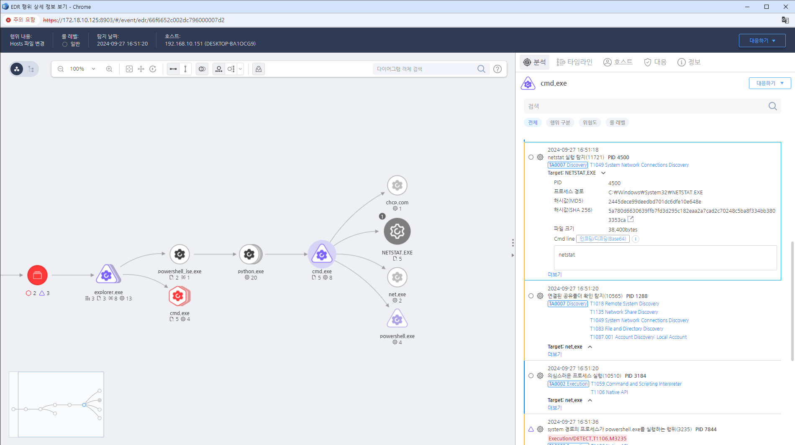

MITRE ATT&CK 액션을 기준으로 대응 방안을 작성

IDS/IPS를 설정하여 비정상적인 네트워크 탐색 활동을 실시간으로 모니터링하고 경고를 발생시킵니다.
네트워크 장비 및 서버의 로그를 정기적으로 분석하여 의심스러운 서비스 탐색 시도를 식별합니다.
의심스러운 탐색 활동이 감지된 시스템을 즉시 격리하여 추가 피해를 방지합니다.
탐색 활동이 발견된 경우 사고 대응 절차를 신속하게 실행하여 상황을 관리합니다.
의심스러운 IP 주소에서의 네트워크 탐색 트래픽을 차단하여 공격을 방어합니다.
네트워크에서 운영되는 서비스와 포트를 최소화하여 공격 표면을 줄입니다.
네트워크 환경을 정기적으로 점검하여 취약점을 발견하고 수정합니다.
직원들에게 네트워크 보안 및 탐색 활동에 대한 교육을 실시하여 인식을 높입니다.
네트워크 세분화
방화벽 설정 강화
서비스 최소화
강력한 인증 및 접근 제어
모니터링 및 로깅
침입 탐지 시스템(IDS) 사용
정기적인 보안 감사
교육 및 인식 제고
Action 실행시 함꼐 영향을 받는 다른 Techniqes
| ATT&CK |
|---|
| T1049 |
| T1135 |
| D3FEND |
|---|
| D3-SCA System Call Analysis |
| D3-NTF Network Traffic Filtering |
| D3-ITF Inbound Traffic Filtering |
| D3-OTF Outbound Traffic Filtering |